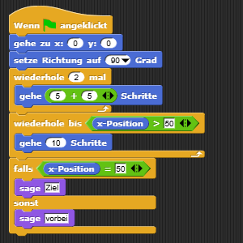

ALG-6 · Fremden Code prüfen und reparieren
Startprojekt in Snap! öffnen ↗Startprojekt speichern (.xml)
Halte die Vorhersage vor dem Ausführen fest. Der Editor öffnet in einem neuen Tab; starte das Projekt erst an der passenden Stelle der Aufgabe. Alternativ: XML speichern und in Snap! importieren.
60 Minuten. Du untersuchst einen neuen Code. Er hat eine fachliche Fehlstelle. Deine erste Vorhersage bleibt erhalten, bevor du ausführst oder eine Lösung siehst.
Auftrag und Code
Der Pfeil soll zuerst zweimal je 5 + 5 Schritte gehen. Danach soll er in Zehnerschritten weiterfahren, bis er die Marke 50 erreicht oder überschritten hat. Genau auf 50 soll er „Ziel“ anzeigen, sonst „vorbei“. Alle Bewegungen erfolgen nach rechts. Eine Überschreitung ist im Modell möglich und muss richtig behandelt werden.
Importiere projekte/ALG-6-Fehlersuche.xml, starte noch nicht. Diese eingerückte Lesefassung entspricht den Blöcken; sie ist keine neue Programmiersprache:
Wenn grüne Flagge angeklickt
gehe zu x: 0 y: 0
setze Richtung auf 90 Grad
wiederhole 2 mal
gehe (5 + 5) Schritte
wiederhole bis (x-Position > 50)
gehe 10 Schritte
falls (x-Position = 50)
sage Ziel
sonst
sage vorbei

1 · Laufspur vorbereiten · 10 Minuten gemeinsam
Besprecht nur die Tabellenform und wie man eine Bedingung liest. Notiere die Startposition und den ersten Durchlauf der festen Wiederholung. Die restliche Laufspur und die Fehlersuche bearbeitest du selbst. Wenn die Blockbedeutungen neu sind, braucht es zuerst Nachsicherung aus ALG-1 bis ALG-4.
2 · Eigene Analyse und Erprobung · 35 Minuten
A · Vorhersage ohne Ausführen. Führe die Tabelle bis zur Meldung. Bei der bedingten Schleife prüfst du auch nach der letzten Bewegung noch einmal die Abbruchbedingung.
| Stelle / Durchlauf | x vorher | Bedingung und ihr Wert, falls vorhanden | Handlung | x danach / Meldung |
|---|---|---|---|---|
| Start | … | – | Position setzen | … |
| feste Wiederholung 1 | … | … | … | … |
| feste Wiederholung 2 | … | … | … | … |
| bedingte Wiederholung: je eine Zeile | … | … | … | … |
| Verzweigung | … | … | … | … |
Zeichne oder ergänze daneben eine Ablaufdarstellung mit beiden Schleifen, deren Rückwegen und der Verzweigung. Beschrifte die bedingten Pfeile. Nutze deine Tabelle als Beleg. Erkläre kurz die Aufgabe einer Anweisung, den Unterschied der beiden Wiederholungen und die Entscheidung am Ende.
B · Genau sechs kurze Wert-/Ausdrucksfragen. Antworte bezogen auf diesen Code:
10: Welcher Werttyp? Ist das ein Ausdruck ohne Operator?5 + 5: Welche Werte werden übergeben, was kommt zurück und welchen Typ hat das Ergebnis? Welcher Operator kommt vor?x-Position: Was liefert dieser Ausdruck direkt nach der festen Wiederholung? Welcher Typ, welche sichtbare Eingabe? Er ist ein Zustandsausdruck ohne Rechen-/Vergleichsoperator.x-Position > 50: Was kommt bei x = 50 zurück, welcher Typ ist das und welchen Vergleich enthält der Ausdruck?sage Ziel: Welcher Wert wird übergeben und welchen Typ hat er? Was ist die Wirkung; gibt die Anweisung einen einsetzbaren Wert zurück?gehe (5 + 5) Schritte: Welchen Wert erhält die äußere Anweisung? Was verändert sie und warum ist das keine Rückgabe?
C · Prüfen und übertragen. Erst jetzt führst du die Fehlerfassung im sichtbaren Schrittmodus aus. Vergleiche mit deiner Vorhersage und dem Auftrag. Notiere eine konkrete Fehlhypothese. Ändere möglichst nur die fehlerhafte Bedingung. Prüfe die reparierte Fassung; sichere die Änderung vor dem nächsten Versuch.
Ändere dann nur die 10 innerhalb der bedingten Schleife auf 12. Die feste Wiederholung bleibt bei zweimal 5 + 5. Sage Endposition und Meldung zuerst voraus. Führe aus und vergleiche mit dem reparierten Zehnerschritt-Fall. Begründe, warum ein bloßer Gleichheitstest beim Abbruch hier nicht genügt.
Richtwert für deine 35 Minuten: 12 Minuten Laufspur/Ablauf, 8 Minuten Wertfragen, 15 Minuten Erprobung, Reparatur und veränderte Schrittweite. Melde fehlende Zeit; unvollständige Belege werden nicht als Können gewertet.
3 · Rückmeldung und neuer Kurzfall · 15 Minuten
Vergleiche deine Begründung mit der Besprechung. Erhalte die erste Fassung und markiere deine Revision. Die Lehrperson schaut auf deine individuelle Laufspur, Begriffe und tatsächlich ausgeführte Änderung.
Neuer kurzer Fall ohne eingeblendete Lösung: Nimm deine reparierte Fassung, setze die bedingte Schrittweite zurück auf 10 und ändere die feste Wiederholung von 2 auf 3. Sage voraus, wie viele Bewegungen jede Schleife jetzt ausführt und welche Meldung folgt. Prüfe und begründe den Unterschied zum Ausgangsfall. Dieser Auftrag vertieft die Kontrollflussanalyse; er ist keine siebte Wert-/Ausdrucksfrage.
Dein Nachweis: Erstvorhersage, Laufspur, Ablaufdarstellung, sechs kurze Antworten, begründete Reparatur sowie Vorhersage/Beobachtung der Änderungen. Exportiere die reparierte Fassung mit 2 Wiederholungen und Schrittweite 10 als ALG-6-Kennung.xml; halte die Varianten in deiner Tabelle fest. Eine laufende Musterlösung ohne eigene Analyse genügt nicht.
Hilfen bei Bedarf
- Laufspurhilfe: Führe den festen Rumpf zweimal aus. Prüfe die Abbruchfrage der zweiten Schleife vor jeder weiteren Bewegung. Erfinde keinen dritten festen Durchlauf.
- Grenzhilfe: Setze gedanklich x = 50 in
x > 50ein. Stimmt die Antwort mit „erreicht oder überschritten“ überein? - Reparaturhilfe: Formuliere „nicht mehr kleiner als 50“ mit
nichtund<. Prüfe auch einen Wert größer als 50. Notiere diese Hilfe; die spätere veränderte Aufgabe prüfst du wieder selbstständig.
Material und Beispiele: eigene Unterrichtskonstruktion, Fassung 1.0 vom 22.10.2026.